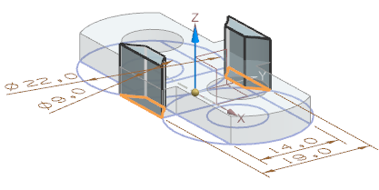

新建文件
您选择新建文件模板时，将会自动打开关联的应用模块。
草图
很多 NX 特征类型都要从草图开始。
通过修改尺寸，然后选择撤销，以测试您草图中的设计意图。
自动标注尺寸
自动标注的尺寸将会在您添加了与之冲突的约束或尺寸后被自动删除。
通过编辑自动标注尺寸的值，以将它们从自动标注的尺寸变为驱动尺寸。
自动标注的尺寸表示您还需要输入设计意图。
如果您不理解自动标注的尺寸为什么是现在这个值，可以更改它的值，然后选择撤销。
设计特征
设计特征(比如拉伸和回转)用于创建基本的部件形状。
细节特征
细节特征(比如边倒圆和倒斜角)用于改善部件模型。